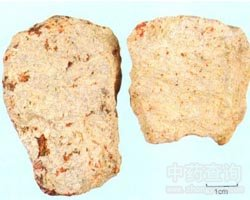

雄黄

拼音
Xiónɡ Huánɡ
别名
明雄黄、黄金石、石黄
来源
本品为硫化物类矿物雄黄族雄黄，主含二硫化二砷（As2S2）。采挖后，除去杂质。或由低品位矿石浮选生产的精矿粉。
生境分布
产湖南、湖北、贵州、云南、四川等地。
药材特点
单斜晶系。晶体柱状，晶面上有纵行条纹，大多成致密块状或粒状集合体。颜色为橘红色，少数为暗红色。条痕淡橘红色。晶面具金刚光泽，断面呈树脂光泽。半透明。解理较完全。断口贝壳状。硬度1.5～2.0。比重3.4～3.6。性脆。受光的作用，久则变为谈橘红色粉末。产于低温热液矿脉内，温泉及火山附近也有存在。常与雄黄、辉锑矿等共生。
性状
本品为块状或粒状集合体，呈不规则块状。深红色或橙红色，条痕淡橘红色，晶面有金刚石样光泽。质脆，易碎，断面具树脂样光泽。微有特异的臭气，味淡。精矿粉为粉末状或粉末集合体，质松脆，手捏即成粉，橙黄色，无光泽。
性味
辛，温；有毒。
功能主治
解毒杀虫，燥湿祛痰，截疟。用于痈肿疔疮，蛇虫咬伤，虫积腹痛，惊痫，疟疾。
用法用量
0.05～0.1g，入丸散用。外用适量，熏涂患处。
化学成分
主为硫化砷AsS，并含少量其他重金属盐。
药理作用
1：①抗菌作用 雄黄水浸剂（1：2）在试管内对多种皮肤真菌有不同程度的抑制作用
2：其1/100的浓度于黄豆固体培养基上试验：对人型、牛型结核杆菌及耻垢杆菌有抑制生长的作用
3：用菖蒲、艾叶、雄黄合剂烟熏2～4小时以上：对金黄色葡萄球菌、变形杆菌、绿脓杆菌均有杀菌作用
4：②抗血吸虫作用 感染日本血吸虫尾蚴的小鼠：于感染前3天开始给雄黄、槟榔、阿魏、肉桂合剂0.2毫升/20克，感染后继续给药12天，成虫减少率达75.27％，动物无虫率达14.29％，无雌虫率达42.86％
摘录
《中国药典》